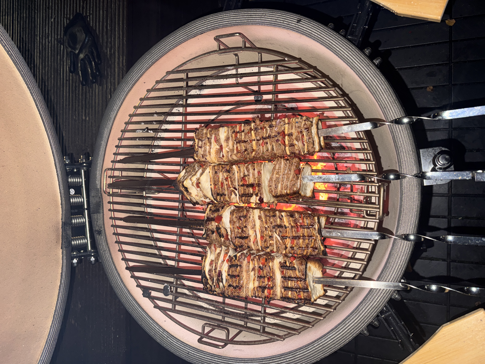
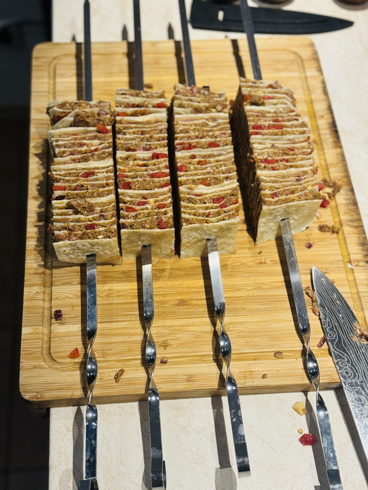

Tortilla Beef Kebabs
Ingredients
- 1.2 kg ground beef
- 6 large wheat tortillas
- 1 red sweet pepper
- 1/4 red onion (approx. 25–30 g)
- 4 cloves garlic
- 2 tbsp paprika powder (approx. 14 g)
- 1 tbsp ground cumin (approx. 7 g)
- 1 tbsp garlic powder (approx. 9 g)
- 1 tbsp oregano (approx. 2 g)
- 1 tbsp ground black pepper (approx. 6 g)
- 1 tbsp salt (approx. 15 g)
- 1/3 cup chopped parsley ≈ 20 g
- 1/4 cup chili oil ≈ 60 ml
Instructions
- In a large bowl, combine the ground beef, red pepper, onion, garlic, parsley, and all the spices.
- Mix thoroughly until everything is evenly combined.
- Trim the rounded edges of the tortillas to form a roughly square shape.
- Spread a thin layer of the meat mixture evenly over each tortilla (not too thick, so it cooks properly).
- Cut each tortilla into four pieces, then turn each piece upside down (meat side inward), and if needed, cut again.
- During cooking, brush with chili oil.
- Cook till golden brown.